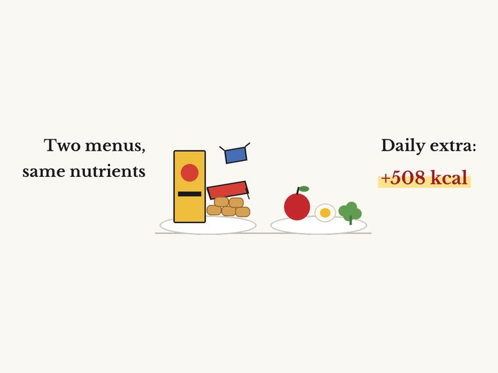
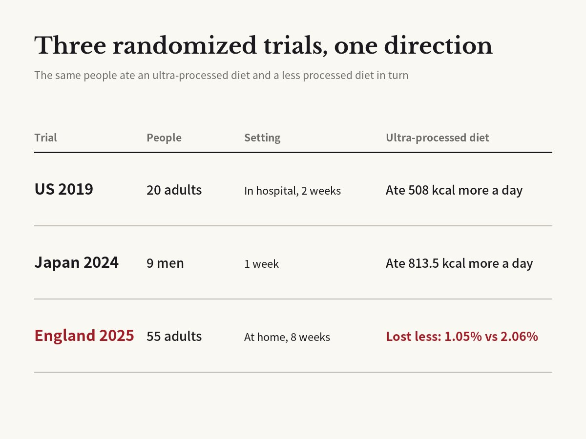

Do ultra-processed foods make you eat more and gain weight? What three diet trials found
Kevin D. Hall et al. · Cell Metabolism, 2019

01The question
Ultra-processed food is blamed for a lot, but most of the evidence comes from surveys that link what people eat to how healthy they are. In 2019, Kevin Hall, then a researcher at the US National Institutes of Health (NIH), ran a cleaner test: if two diets are matched for sugar, fat, salt and fiber, does the ultra-processed one still make people eat more?
His team checked 20 healthy adults, 10 men and 10 women with an average age of 31, into the NIH Clinical Center for 28 days straight. In random order, each person spent two weeks on an ultra-processed diet and two weeks on an unprocessed one. The meals offered the same calories, carbohydrates, fat, protein, sugar, sodium and fiber. People could eat as much or as little as they liked, and the team measured what they actually ate.
The study, published in Cell Metabolism, has since been cited more than 1,600 times, according to Crossref.
02What counts as ultra-processed
The term comes from NOVA, a system built by the Brazilian nutrition researcher Carlos Monteiro and colleagues at the University of São Paulo. NOVA sorts food by how much it has been processed and why, not by its nutrients. It has four groups: unprocessed or minimally processed foods; cooking ingredients such as oil, sugar and salt; processed foods; and ultra-processed foods.
Ultra-processed foods are factory formulations made from extracts of foods mixed with additives and industrial ingredients. Breakfast cereals, sweets and mass-produced bread are typical examples. In the UK, more than half of the calories people eat are reported to come from them, with similar levels in the US.
03Two weeks, two directions
On the ultra-processed diet, people ate about 508 more calories a day. The extra came from carbohydrates (about 280 calories) and fat (about 230). Protein barely changed.
Their weight moved in opposite directions. People gained an average of 0.9 kg (about 2 pounds) during the ultra-processed weeks and lost the same amount during the unprocessed weeks. Body fat went up by 0.4 kg on the first and down by 0.3 kg on the second. Because the same people ate both diets in random order, the diet itself is the most likely cause.
Participants rated the two diets as equally pleasant and familiar, and reported similar hunger and fullness. What differed was speed: they ate ultra-processed meals 17 calories per minute faster. Blood tests showed that PYY, a gut hormone released after eating that makes you feel full, rose on the unprocessed diet, while ghrelin, a stomach hormone that makes you feel hungry, fell compared with the start of the study.
The ultra-processed diet was also cheaper. Ingredients for a week of 2,000-calorie days cost $106, compared with $151 for the unprocessed diet.
04Tested again in Japan and England
Twenty people on a hospital ward is a small sample in an unusual setting, so the result needed testing elsewhere.
In 2024, a team at the University of Tokyo Hospital put nine Japanese men with overweight or obesity on each diet for a week. On the ultra-processed week they ate about 814 more calories a day and gained 1.1 kg more. They also chewed less for the same number of calories.
In 2025, researchers at University College London (UCL), with Hall as a co-author, ran a larger and longer trial. Fifty-five adults with a body mass index between 25 and 40, who normally got at least half their calories from ultra-processed food, took part. This time both diets followed the UK government's healthy eating guide. The ultra-processed menu included products sold as healthy, such as fortified breakfast cereals, ready meals and plant-based alternatives. Food was delivered to people's homes for eight weeks per diet, with a four-week break in between. The authors say it was the first trial to test ultra-processed food within national dietary guidelines.
Both diets led to weight loss. People lost 2.06% of their body weight on the minimally processed diet and 1.05% on the ultra-processed one, a gap of about 1 percentage point, or 0.96 kg (about 2 pounds). They also lost 0.98 kg more fat on the minimally processed diet, and only that diet reduced food cravings.
Not every number pointed the same way. Triglycerides fell more on the minimally processed diet, but LDL cholesterol, the 'bad' kind, fell more on the ultra-processed one.

05Why people eat more is still debated
In Hall's trial and the Japanese one, people ate more on the ultra-processed diet. The UCL trial could not measure intake directly because people lived at home, but their food diaries showed about 327 fewer calories a day on the minimally processed diet, though not everyone returned a diary. Why this happens is still an open question.
The leading explanation is energy density: how many calories are packed into each bite. On paper, Hall's two diets had the same energy density, but only because the ultra-processed menu included drinks with added fiber. Counting solid food alone, the ultra-processed diet was about 85% more energy-dense. Drinks do less to make people feel full, so the team thinks that gap helped drive overeating. In the UCL trial, the ultra-processed diet was also more energy-dense. Eating faster and chewing less are other suspects.
Some researchers question whether 'ultra-processed' is a useful idea at all. In a 2022 debate in the American Journal of Clinical Nutrition, Arne Astrup of the Novo Nordisk Foundation in Denmark, which controls the maker of the weight-loss drug Wegovy, argued no. He said NOVA's definitions of processing and additives are vague enough to misclassify foods, and that it lumps in nutritious options such as plant-based alternatives. He argued that the overeating in Hall's study can be explained by familiar measures such as energy density, fiber, glycemic load and added sugar, and that the effect faded quickly over the two weeks.
Hall's own data showed that fading: intake on the ultra-processed diet fell steadily, by about 25.5 calories with each passing day. His team also raised another possibility. The ultra-processed diet got 14% of its calories from protein, against 15.6% for the unprocessed one, and people may have kept eating to reach the same amount of protein, which could explain part of the extra calories.
Monteiro, on the other side of the same debate, argued that the evidence is already strong enough for dietary guidelines to tell people to cut back on ultra-processed food.
06What to keep in mind
Hall's study covered 20 people for two weeks per diet. The authors themselves note that a hospital ward is hard to generalize to everyday life. The Japanese trial had nine men eating each diet for a week.
The weight gap in the UCL trial was small, about 1 percentage point over eight weeks. Of the 55 people who enrolled, 50 were included in the main analysis, and nine in ten were women. All were staff at University College London Hospital, nearly half of them nurses, and 43 finished both diets. Results also depended on which diet people ate first. If the trends held for a year, the authors estimated 9–13% weight loss on the minimally processed diet and 4–5% on the ultra-processed one, but no one has followed people for a full year.
All three trials swapped whole diets. That design cannot tell whether additives, energy density or eating speed is doing the work. Many observational studies link heavy ultra-processed food intake to worse health, but they struggle to separate the food from the other habits of the people who eat it.
The UCL trial was funded by the UK's National Institute for Health and Care Research and the Rosetrees Trust, a medical research charity, and the funders had no role in its design or analysis. The authors disclosed their interests. The first author receives royalties from a self-published book that mentions ultra-processed food. Co-author Chris van Tulleken, author of a book on the subject, receives book royalties and has been paid for broadcasting on it. The senior author, Rachel Batterham, has been an employee and shareholder of the drugmaker Eli Lilly since May 2023.
Original paper
- Hall et al. (2019), Cell Metabolism 30(1), 67–77, doi:10.1016/j.cmet.2019.05.008
- doi.org/10.1016/j.cmet.2019.05.008